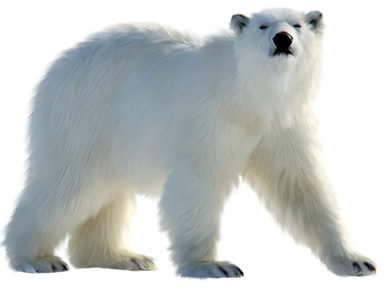
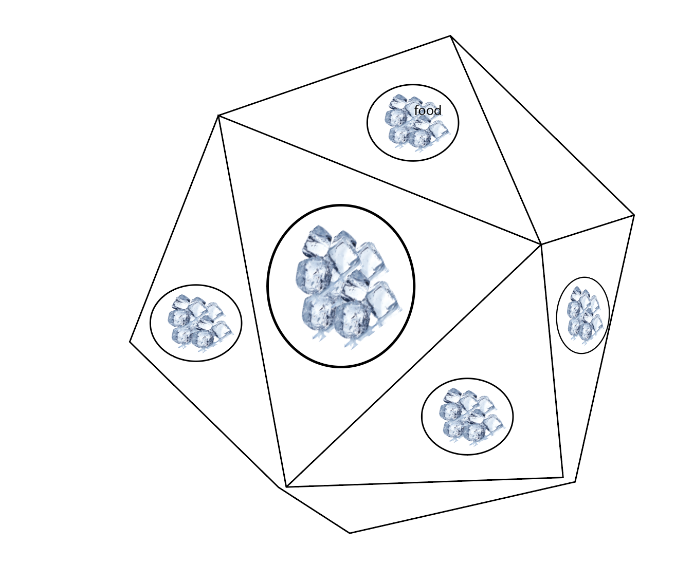
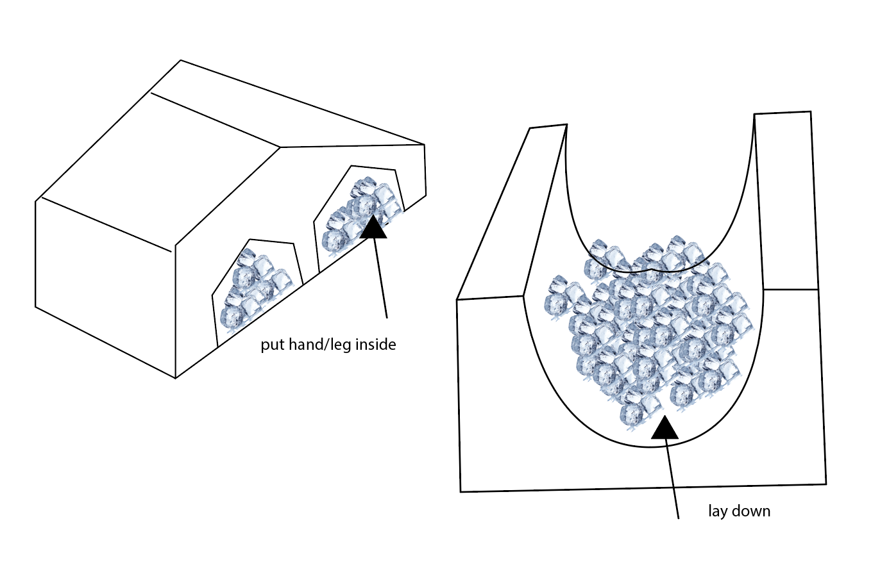

Assignment: Enrichment I
This week assignment is to post two brief enrichment proposals.
Animal: Polar bear

Proposal 1: Feeding Machine -cognitive + food enrichment
Polar bears actually have black skin, which is very easy to absorb sunlight, and there are two layers of fur on the outside of the skin, so polar bears enjoy and love to live surrounding by ice and snow. Because of global warming, the ice is melting. It's true that polar bear habitat has been affected.
Polar bears have an extremely acute sense of smell, seven times that of dogs. They usually use their sense of smell to find and catch prey(seal). Using their sense of smell is what my first enrichment prroposal is focused on -- getting them moving.
In the feeding machine, the polar bear need to jump many times on the ice pool to get the food. Once the cover of the food container fall off, the food fall on the ice pool too. Polar bear need to find the food inside the ice pool, which makes the polar bear feel like live in the wild.
proposal 2: Feeding Machine 2

proposal 3: Resting Case
Polar bears spend most of their lives (about 66.6 percent) in a "resting" state, such as sleeping, lying down to rest, or waiting for prey, leaving 29.1 percent of their time walking or swimming on land or ice. In the second porposal, I want to make a better place for polar bear to get rest. Wild polar bear sleep and rest on the ice or snow
